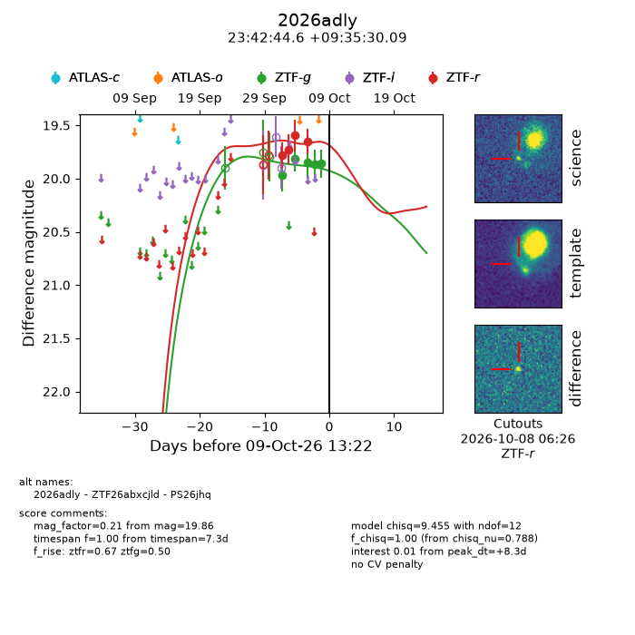
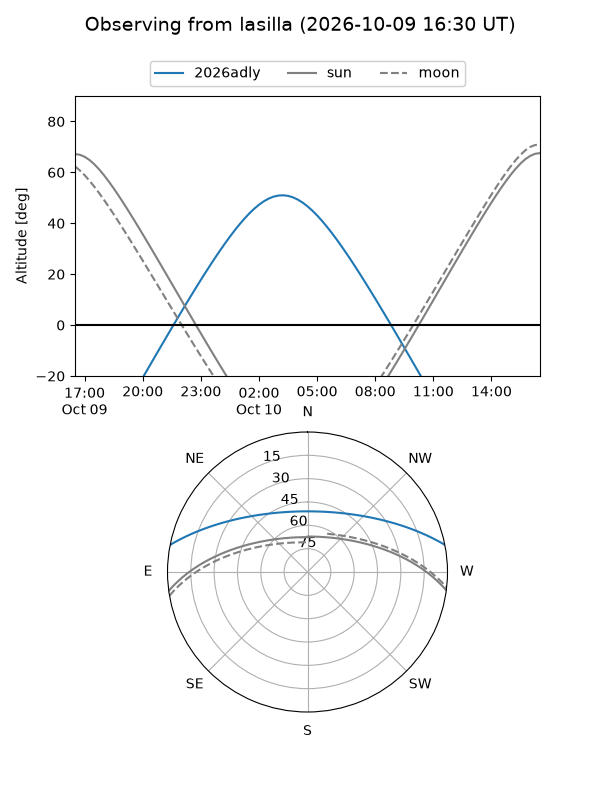
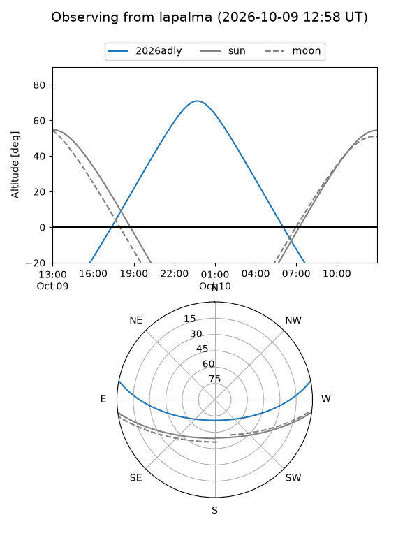
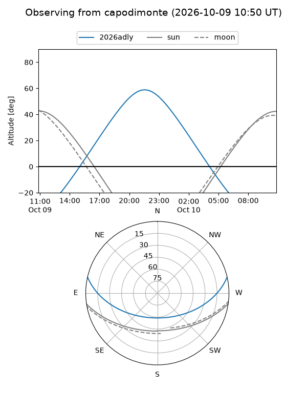
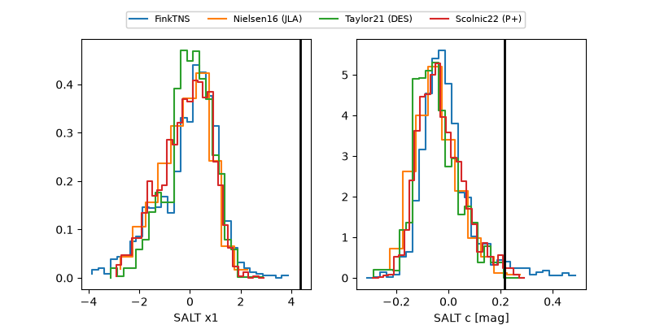

2026adly
Target 2026adly at 2026-10-09 13:25
Aliases and brokers:
FINK-ZTF: ztf.fink-portal.org/ZTF26abxcjld
Lasair-ZTF: lasair-ztf.lsst.ac.uk/objects/ZTF26abxcjld
ALeRCE-ZTF: alerce.online/object/ZTF26abxcjld
YSE-PZ: ziggy.ucolick.org/yse/transient_detail/2026adly
TNS name: wis-tns.org/object/2026adly
Direct TNS query: direct search
alt names
ZTF26abxcjld (ztf,fink_ztf)
2026adly (tns,yse)
PS26jhq (panstarrs)
Coordinates:
equatorial (ra, dec) = 355.6858,+9.59169
equatorial (HMS+DMS) = 23:42:44.59,+09:35:30.09
galactic (l, b) = (96.1916,-49.67990)
Flags:
peak dt: +8.3
Photometry:
last ztfg=19.86, ztfr=19.65
5 ztfg, 4 ztfr detections
Lightcurve

Visibility



Additional plots
